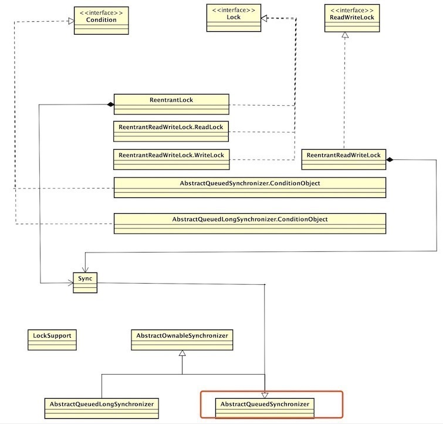
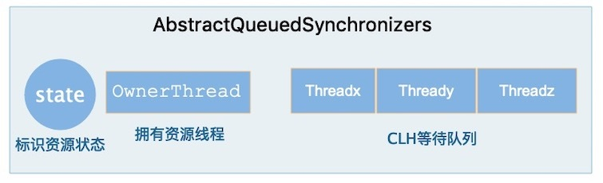
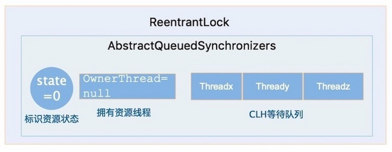
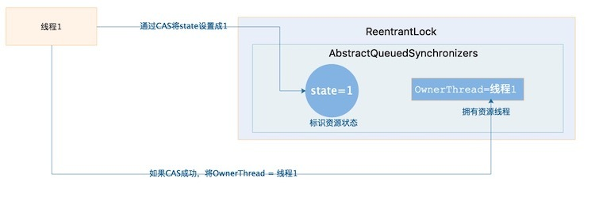
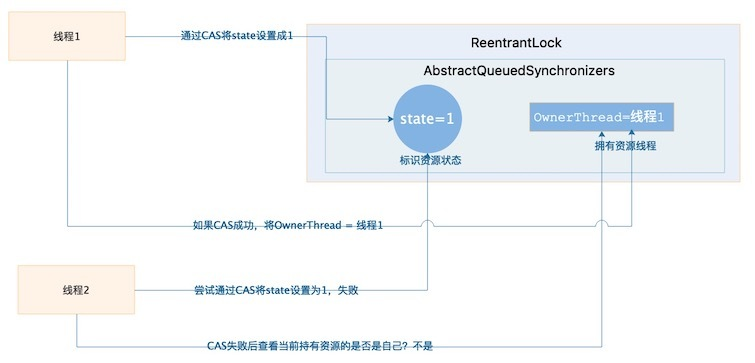
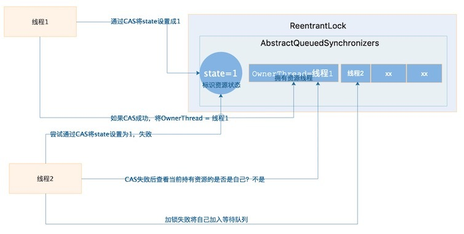
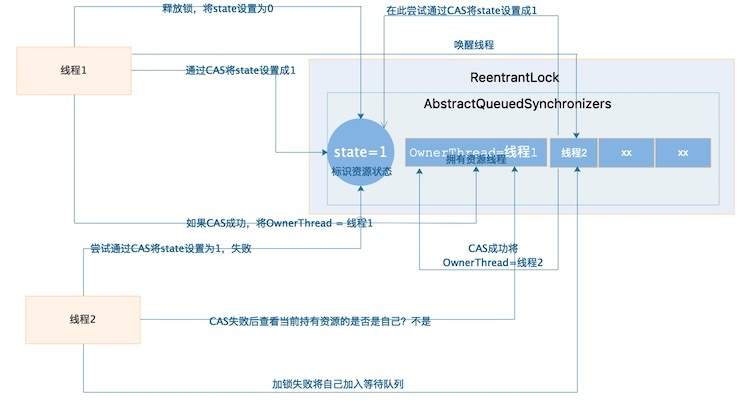

这篇文章，我们聊一聊Java并发中的核武器， AQS底层实现。
不管是工作三四年、还是五六年的在工作或者面试中涉及到并发的是时候总是绕不过AQS这个词。
首先，确实还有很多人连AQS是什么都不知道，甚至有的竟不知其为何物。或者有的听说过其名，但怎么拼写的都忘记了。
总的来说确实有很多同学对AQS总有一种云里雾里的感觉，在搜索引擎中搜下AQS看个几篇文章，估计对其还是醉醺醺的。
所以根据上面的难点，这篇我们使用由简入难的方式，让你一次搞定这Java并发中这个核武器AQS
ReentrantLock 和 AQS 的关系
首先我们以你最受的方式带你进入这个核武器库，Java 并发包下的 ReentrantLock大家肯定很熟悉了。
基本上学过Java 的都知道ReentrantLock，下面我就不多说了直接上一段代码。
这段代码大家应该很熟悉了，无非就是获取一把锁，加锁和释放锁的过程。
有同学就问了这和AQS有毛关系呀！别着急，告诉你关系大着去了。在Java并发包中很多锁都是通过AQS来实现加锁和释放锁的过程的，AQS就是并发包基础。
例如：ReentrantLock、ReentrantReadWriteLock 底层都是通过AQS来实现的。
那么AQS到底为何物尼？别急，我们一步一来揭开其神秘的面纱。
AQS 的全称 AbstractQueuedSynchronizers抽象队列同步器，给大家画三张图来说明其在Java 并发包的地位、 长啥样、和ReentrantLock 的关系。

通过此类图可以彰显出了AQS的地位、上层锁实现基本都是通过其底层来实现的。

你没看错AQS就长这个鸟样。说白了其内部就是包含了三个组件
- state 资源状态
- exclusiveOwnerThread 持有资源的线程
- CLH 同步等待队列。

在看这张图现在明白ReentrantLock 和 AQS 的关系了吧！大白话说就是ReentrantLock其内部包含一个AQS对象（内部类），AQS就是ReentrantLock可以获取和释放锁实现的核心部件。
ReentrantLock 加锁和释放锁底层原理实现
好了！ 经过上面的介绍估计大家已经对AQS混了个脸熟，下面我们就来说说这一段代码。
这段代码加锁和释放锁到底会发生什么故事尼？
很简单在AQS 内部有一个核心变量 （volatile）state 变量其代表了加锁的状态，初始值为0。
另外一个重要的关键 OwnerThread 持有锁的线程，默认值为null 在回顾下这张图。
接着线程1过来通过lock.lock()方式获取锁，获取锁的过程就是通过CAS操作volatile 变量state 将其值从0变为1。
如果之前没有人获取锁，那么state的值肯定为0，此时线程1加锁成功将state = 1。
线程1加锁成功后还有一步重要的操作，就是将OwnerThread 设置成为自己。如下图线程1加锁过程。

其实到这大家应该对AQS有个大概认识了，说白了就是并发包下面的一个核心组件，其内部维持state变量、线程变量等核型的东西，来实现加锁和释放锁的过程。
大家有没有不管是ReentrantLock还是ReentrantReadWriteLock 等为什么都是Reentrant 开头尼？
从单词本身意思也能看出，Reentrant 可重入的意思 ，也就说其是一个可重入锁。
可重入锁？
就是你可以对一个 ReentrantLock 进行多次的lock() 和 unlock() 操作，也就是可以对一个锁加多次，叫做可重入锁。 来一段代码直观感受下。
注意：释放锁是由内到外依次释放的，不可缺少。
问题又来了？ReentrantLock 内部又是如何来实现的尼？
说白了！还是我们AQS这个核心组件帮我实现的，很 easy~ 上述两个核心变量 state 和 OwnerThread 还记得吧！
重入就是判断当前锁是不是自己加上的，如果是就代表自己可以在次上锁，每重入一次就是将state值加1。就是这么简单啦！！！
说完了可重入我们再来看看锁的互斥又是如何实现的尼？
此时线程2也跑过来想加锁，CAS操作尝试将 state 从0 变成 1， 哎呀！糟糕state已经不是0了，说明此锁已经被别人拿到了。
接着线程2想？？？ 这个锁是不是我以前加上的，瞅瞅 OwnerThread=线程1 哎！ 明显不是自己上的 ，悲催加锁失败了～～～。来张图记录下线程2的悲苦经历。

可是线程2加锁失败将何去何从尼？
线程2：想，要是有个地方让我休息下，等线程1释放锁后通知我下再来从新尝试上锁就好了。
这时我们的核心部件AQS又登场了！
AQS: OK！ 好吧！那我就给你提供一个落脚地吧（CLH）进去待着吧！一会让线程1叫你。
线程2: 屁颠屁颠的就去等待区小憩一会去了。同样来张图记录下线程2高兴样。

此时线程1业务执行完了，开始释放锁
- 将state值改为0
- 将OwnerThread 设为null
- 通知线程2锁我已经用完了，该你登场了
线程2一听，乐坏了！立马开始尝试获取取锁，CAS 尝试将 state 值设为 1 ，如果成功将OwnerThread设为自己 线程2。
此时线程2成功获取到了锁，再来张图瞅瞅。

总结
Ok ！到这借着Reentrantkock 的加锁和释放锁的过程给大家讲解了一下AQS工作原理。
用一句话总结下：AQS就是Java并发包下的一个基础组件，用来实现各种锁和同步组件的，其核心分为三个组件。
- Volatile state 变量
- OwnerThread 加锁线程
- CLH 同步等待队列
等并发核心组件。